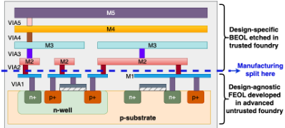
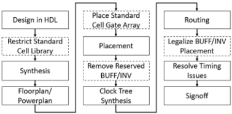
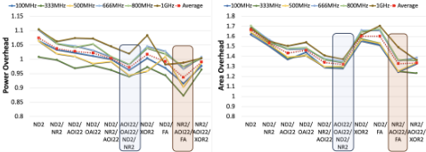
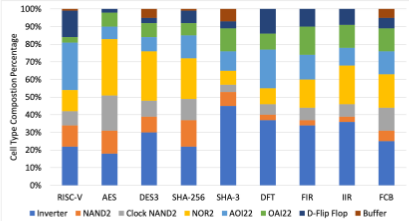
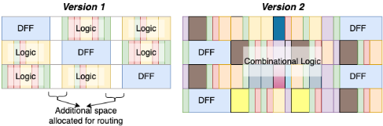
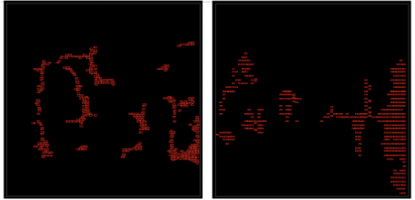
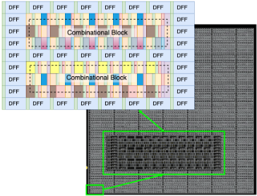

一种提供供应链安全的 IP 无关（IP-Agnostic）基础单元阵列 FC-Array
针对第三方代工导致的供应链脆弱性与 IP 安全风险，以及 FPGA 囤货方案性能/面积代价大（性能差 2.8x-6.3x、面积差 13x-31x）且配置存于存储器存在易变性风险的问题，论文提出仅由代工厂标准单元构成的 IP 无关基础单元阵列 FC-Array 平台。方法上通过修改综合、布局、布线流程，把任意数字设计映射到规则的标准单元块 FCB（36μm×12μm）上，并结合 3D split manufacturing：FEOL（至 Metal 1）在不可信先进代工厂预制囤货，BEOL 在可信代工厂按设计完成，实现语义安全的 IP 保护。28nm 后 PnR 仿真显示，低功耗配置（100 MHz）平均功耗增 24%、面积增 88%，最坏情况功耗 1.85x、面积 2.61x 且时序与标准单元 ASIC 等效；对比 eFPGA 功耗仅为其 5.6%，最优情况下面积省 29x、功耗省 17.8x。论文还在 Simulation Security Definition 下证明了该 split manufacturing 构造的安全性。
全球化 IC 制造依赖第三方代工带来供应链脆弱性与 IP 安全风险。现有对策中，FPGA 等软件可编程方案虽可囤货，但性能/面积代价大，且配置保存在存储器中，会因老化、温度、噪声、辐射等因素发生改变（mutability），不适合工业控制、汽车、航天/国防等高后果应用；MGPA 等掩膜可编程方案则需定制单元与定制工具，成本与开发周期高。论文目标是构建一个无需定制单元/定制工具、可囤货、能保护 IP 且保持 ASIC 优势的制造平台。
提出 Foundational Cell Array（FC-Array）：由代工厂标准单元按规则图案构成的 Foundation Cell Block（FCB）平铺而成的 IP 无关 FEOL 阵列。通过经验性设计空间探索确定 FCB 的单元类型（Vanilla-FCB 用 NAND/NOR/AOI/OAI，Crafted-FCB 用 NAND/AOI/FA）、单元比例与物理摆放（模仿标准单元设计中 flip-flop 自然聚簇的模式），并预留 buffer 空间支持 CTS 与时序收敛（低功耗用 BUFF1，高性能用 BUFF1/BUFF4/BUFF12）。修改工业 ASIC 流程的综合、布局、布线阶段：借助 ECO 流程放置 FCB、将综合网表映射进 FCB、tie-off 未用单元、布线后重新 legal化 buffer 位置。结合 split manufacturing：FEOL 冻结至 Metal 1（禁止 inter-cell 连接）由不可信先进代工厂制造并囤货，Metal 2 及以上 BEOL 由可信代工厂按设计完成，并在 Simulation Security Definition 下给出语义安全证明。
28nm 工业工艺、后 PnR 仿真：低功耗配置（100 MHz）相对标准单元 ASIC 平均功耗增加 24%、面积增加 88%；摘要报告最坏情况功耗增加 1.85x、面积增加 2.61x（等效时序性能）
高性能配置（1 GHz）下所有测试设计均满足时序约束；平均面积开销高于低功耗场景，原因是需要更强驱动 buffer 与更多 buffering
Vanilla-FCB 最大功耗惩罚为 SHA-256 的 1.86x，Crafted-FCB 将其降至 1.29x；但 Crafted-FCB 使 SHA-3 功耗惩罚升至 1.72x（vanilla 为 1.42x）
面积惩罚：Vanilla-FCB 下 AES 最高 2.74x、FIR 最低 1.31x；Crafted-FCB 对不使用 FA 的设计（AES、DES3、SHA-3）面积惩罚更明显
受限单元库综合：仅 NAND2 平均门数开销 3.64x，加 NOR2 降至 3.16x，再加 AOI/OAI22 降至 2.27x
与 16nm FinFET eFPGA（200 MHz）对比：FC-Array 功耗仅为 eFPGA 的 5.6%；最优情况下 soft eFPGA 面积多 29x、功耗多 17.8x
在 Simulation Security Definition 下证明 FC-Array split manufacturing 满足 simulation security，且该证明与具体 FCB 设计无关
与 FPGA/eFPGA 相比，FC-Array 将 IP 固化在硬件而非存储配置中，消除易变性并大幅降低 PPA 开销；与 MGPA 等掩膜可编程方案相比，仅使用代工厂标准单元与商业 EDA 工具，无需定制单元与定制工具；与以往 split manufacturing 工作相比，FEOL 是设计无关的（IP-agnostic），不可信代工厂仅能获得 FCB 组成、floorplan 尺寸与 I/O 引脚数上限等有限信息，并以 Simulation Security Definition 下的语义安全证明取代以往仅依赖经验性抗攻击评估的做法。
相关度级别：low
命中能力域：无明显对应
理由：论文核心贡献是面向 IC 制造供应链安全与 IP 保密的可囤货 FEOL 平台及 split manufacturing 安全证明，属于制造供应链/硬件安全主题，与团队七个能力域（内存/互连 IP 架构、RTL 设计实现、时序与物理实现、验证方法学、形式验证、仿真加速、EDA 自动化）均无实质技术交集。文中对综合、PnR、时序收敛的处理是对标准商业工具流程的应用性改造（为 FCB 预留 buffer、布线后 legal化），并未产出团队可复用的 RTL 设计、验证方法学或 sign-off 方法学；其 IP 保护针对的是芯片制造环节的代工厂泄露风险，与团队以架构/RTL/验证形式交付内存与互连 IP 的业务模式关联很弱。上游 catalog 标签'无明显对应'与该判断一致。
建议动作：仅了解结论
CHRISTOPHER TALBOT，美国卡内基梅隆大学（Carnegie Mellon University）
DEEPALI GARG，美国卡内基梅隆大学（Carnegie Mellon University） LAWRENCE PILEGGI，美国卡内基梅隆大学（Carnegie Mellon University） KENNETH MAI，美国卡内基梅隆大学（Carnegie Mellon University）
集成电路（IC）制造复杂性不断增长以及对第三方代工的依赖，造成了供应链的脆弱性，进而导致芯片短缺和IP安全风险。通用IC能够缓解制造安全风险，但其依赖于基于软件的配置，这对于高后果应用而言并非最优。我们的工作提出了一种新型的IP无关基础单元阵列（Foundational Cell Array, FC-Array）平台，以克服这些挑战。该平台构建于经过验证的标准单元和行业标准电子设计自动化（EDA）工具之上，保留了专用集成电路（ASIC）的诸多优势。通过引入三维（3D）分离制造技术，我们提供了语义安全的IP保护以及可储备的基底晶圆。我们的测试展示了低功耗（100 MHz）和高性能（1 GHz）两种选项。在一个布局布线后仿真的28nm设计中，在等效时序性能下，与标准单元ASIC相比，我们的FC-Array在最坏情况下功耗增加至1.85倍，面积增加至2.61倍。
Christopher Talbot、Deepali Garg、Lawrence Pileggi 和 Kenneth Mai。2024。一种提供供应链安全性的IP无关基础单元阵列。载于第61届ACM/IEEE设计自动化会议（DAC '24），2024年6月23-27日，美国加利福尼亚州旧金山。ACM，美国纽约州纽约，6页。https: //doi.org/10.1145/3649329.3657364
The current inter-dependencies in our globalized IC ecosystem create a fragility where local or global disasters can disrupt everything from hand-held consumer goods to the automobile industry [3, 19]. The recent chip shortage has highlighted the importance of supply chain resilience [11]. One popular way to reduce IC supply risk is to design software-programmed IPs to target general-purpose ICs, such as field programmable gate arrays (FPGAs). Since FPGA fabric can implement a wide variety of soft IP without hardware revisions, it is an attractive solution to be stockpiled for supply chain resilience.
However, FPGAs incur significant area & performance costs. In a recent study [2], the performance difference between an ASIC & FPGA for intensive arithmetic operations can range from 2.8x to 6.3x, with the area ratio varying from 13x to 31x. Additionally, while active, FPGAs store their IP configuration in memory, typically using BRAMs in most commercial FPGAs, raising concerns about mutability. Various factors such as aging, temperature, noise, supply
Authors' Contact Information: Christopher Talbot, ctalbot@andrew.cmu.edu, Carnegie Mellon University, Pittsburgh, Pennsylvania, USA; Deepali Garg, deepalig@cmu.edu, Carnegie Mellon University, Pittsburgh, Pennsylvania, USA; Lawrence Pileggi, pileggi@ andrew.cmu.edu, Carnegie Mellon University, Pittsburgh, Pennsylvania, USA; Kenneth Mai, kenmai@andrew.cmu.edu, Carnegie Mellon University, Pittsburgh, Pennsylvania, USA.
This work is licensed under a Creative Commons Attribution International 4.0 License.
DAC '24, June 23-27, 2024, San Francisco, CA, USA © 2024 Copyright is held by the owner/author(s).
https://doi.org/10.1145/3649329.3657364. ACM ISBN 979-8-4007-0601-1/24/06.
fluctuation, radiations, light exposure, and physical shock could alter the device configuration. Unless additional protections are implemented, which come at the expense of area and performance, FPGAs are not suitable for high-consequence applications such as industrial controllers, automobiles, and aerospace/defense, where utmost reliability and robustness are imperative.
A programmable fabric that embeds the IP into the hardware rather than in memory could mitigate mutability concerns and offer better performance. To this end, we can build a mask-programmable, design-agnostic IC base wafer. Mask programmable gate arrays (MGPAs), proposed in [8, 13, 14] meet these requirements but require custom cells and tooling. Design and validation of custom cells add considerable cost and development time.

本工作提出了一种IP无关的前道工序（FEOL）单元阵列，其仅由基于代工厂的标准单元构成。我们提出一个平台，将这些单元阵列用作任何数字设计的底层基础。我们将本工作称为基础单元阵列（FC-Array）。所提出的平台与业界标准的商用工具流程兼容，并消除了对定制工具的需求。尽管我们当前的FC-Array仅包含数字结构（fabric），但该平台可以通过三维堆叠或先进封装[15]，轻松地将存储器和/或硬化IP（Hardened IPs）集成到结构之中。
结合现有的分离制造（split manufacturing）技术[12, 18]，我们可以生产出直至Metal 1的基底晶圆，并将其储备起来以供日后制造。后道工序（BEOL）可在之后根据设计规格按需构建。这种设计无关的FEOL还能避免向不可信代工厂泄露信息，并抑制篡改行为。使用我们的FC-Array所提出的分离制造方式如图1所示。本文的主要贡献如下：
2 · Chris T.、Deepali G. 等
表??总结了现有各种集成电路（IC）制造方案之间的多种权衡，突显了本工作的范围。我们分析了设计者所敏感的一般性权衡因素，例如设计成本、对定制/厂商专用工具的需求、设计的可变性，以及功耗、面积与性能（PAP）。此外，我们还比较了制造过程能在多大程度上对不可信代工厂混淆设计，以保护IP的机密性与完整性。
与IP无关的前道工序（FEOL）要求底层物理单元、布图规划和电源规划在不同设计之间保持通用，并将版图冻结在晶体管定义层（即多晶硅、扩散层和氧化层）。由于较低金属层的间距更细，冻结这些金属层可进一步降低制造成本，这是可取的。设计在后道工序（BEOL）中完成，由于信号在间距较大的上层金属层中布线，因此有可能由制程较不先进的代工厂进行制造。FEOL与BEOL之间的分离形成了一个天然的边界，该边界与现有的分离制造技术[12]兼容，如图1所示。

由于定制单元设计和定制设计工具会给设计流程增加复杂性，我们的基础单元阵列（FC-Array）仅依赖工艺节点的标准单元和标准商用工具。这些标准单元库随工艺节点一同发布，由代工厂进行验证，并与广泛使用的商用工具兼容。这些特点使我们能够将底层工艺节点从设计中抽象出来，从而更高效地面向不同的工艺节点。
图2展示了如何修改工业数字设计流程以纳入我们的FC-Array。所需的修改位于综合、布局和布线阶段，下文将对其进行详细描述。
FC-Array 的基础是一种由标准单元构成的规则图案，其版图构成了我们的基础单元块（FCB）。这种图案使我们能够根据制造或设计需求灵活地缩放布图规划。在商业环境中，布图规划的尺寸是固定的，但代工厂可以根据客户的需求提供不同布图规划尺寸的 FC-Array。
FCB 需要一组受限的标准单元，这些单元必须足够通用，才能实现任何可能的硬件描述语言（HDL）设计。为完成逻辑综合，商业工具至少需要一个反相器、一个具备完整功能的二输入门（例如 NAND2 或 NOR2）以及一个触发器。此外，还需要 TIE-Hi/TIE-Lo 单元，以便工具综合常量，并最终将未使用的单元连接到固定电平，从而避免不必要的功耗。许多设计还需要具备置位与清零功能的触发器。尽管缓冲器和 clock-NAND 对于功能综合并非严格必需，但对于综合工具和布局布线（PnR）工具而言，它们是解决设计中建立时间与保持时间违例相关问题所必不可少的。
先前的工作 [12] 已经表明，采用 28nm 工艺实现拆分制造是可行的，即前道工序（FEOL）在一家先进代工厂生产，而后道工序（BEOL）在另一家代工厂生产。我们在图 1 中展示了针对我们的 FC-Array 构建所提出的拆分制造方案。在典型的标准单元中，单元内连接位于 Metal 1 和 Metal 2，因此这些金属层是作为我们 FEOL 最顶层的候选。Metal 1 被单元内连接填满，仅能容纳极少的单元间布线连接。Metal 2 被大量用于布线，因此冻结该层会显著降低布线质量。因此，我们选择 Metal 2 及其以上各层来构成我们工作中的 BEOL。这一选择与先前工作 [12] 中展示的现有拆分制造方式相兼容。
提供供应链安全的 IP 无关基础单元阵列 · 3
尽管可以将 FC-Array 针对特定设计领域进行优化，但每种 FC-Array 都需要单独制造和储备。因此，我们希望探索一种更具通用性的 FC-Array，使其在多个设计领域之间提供均衡的 PAP。然而，该平台也能够轻松地生产专用的 FC-Array，以适应特定的应用领域。本文提出的通用 FC-Array 已在多种电路类型上进行了测试，包括基于密码学、基于算术运算和基于处理器的设计，规模从 7,000 门到 70,000 门不等。
我们的流程始于对 FCB 设计空间的广泛探索，FCB 构成了 FC-Array 的基础。我们旨在通过镜像标准单元的组成与排布模式来实现均衡的 PAP（第 4 节）。我们识别出最优的 FCB 候选，并将其布置在整个布图规划中，从而实现对任意设计的无缝映射（第 2 节）。
在第 5 节中，我们在性能效率相当的前提下，将 FC-Array 设计与其对应的标准单元 ASIC 设计进行面积和功耗比较。面积开销源于核心 PnR 布图规划设计，而功耗开销则是在 PnR 之后于正常工作状态下仿真得到的。我们采用工业级 28nm 工艺，且仅使用标准工业工具。
FCB 是我们 FC-Array 中规整的核心图案，完全由标准单元构成。经过多年的现场可编程门阵列（FPGA）设计与工具开发，人们已经清楚地认识到，构建一个通用且高效的结构并无直截了当的闭式解，因而必须进行深入的实证分析 [10]。相比之下，FCB 不受静态布线结构的约束，也不具有同构的查找表（LUT）结构，这使解空间进一步复杂化。我们的 FCB 设计通过实证与实验所得的洞见来应对这种复杂性，从而确保其在实际中的有效性。创建 FCB 需要在三个设计空间中进行探索：a) 单元类型，b) 单元比例，以及 c) 单元在 FCB 内的物理布局。
在使用受限单元库集合时，我们发现，在我们所针对的 28 nm 工艺节点上，仅施加最小单元尺寸限制的设计在高达 500 MHz 的频率下表现良好。为了应对更高的时钟频率，我们引入了较高驱动强度的缓冲器，并辅以低强度缓冲器，使工具能够求得同时满足建立（setup）与保持（hold）约束的最优时序解。通过分析我们发现，逻辑单元可以保持最小尺寸，而对于高于 500 MHz 的频率，则可引入较高强度的缓冲器。这使得受限单元库能够使其设计性能与对应的标准单元 ASIC 设计相匹配。在 28 nm 节点中，size-1、size-4 与 size-12 缓冲器是能够最优满足时序要求的最小组合。

4.1.3 变体。继逻辑门数开销的分析之后，我们随后评估了各种单元组合在功耗与面积上的开销，其中在高达 500 MHz 的频率下采用最小尺寸缓冲器，而在高于 500 MHz 的频率下采用 size-2、size-4 与 size-12 缓冲器的组合，如图 3 所示。
我们发现，NAND/AOI/FA 的开销最小，并由此构成我们的 Crafted-FCB。然而，正如 4.1.2 节所强调的，对于通用 FC-Array 设计而言，使用 FA 这类复杂单元可能颇为棘手。FA 仅对某些设计有益，且在我们所有的基准测试中，其平均仅占总单元构成的 <5%。
4 · Chris T., Deepali G., 等
因此，我们将次优的候选组合保留在考虑之列，以便在布局布线（place-and-route）之后比较两种 FCB 的开销。NAND/NOR/AOI/OAI 组合在所有设计和频率下均表现良好，其开销仅略高于 NAND/AOI/FA 组合，这构成了我们的 Vanilla-FCB。
在确定了单元类型之后，我们现在必须确定 FCB 中所包含的每种门单元的比例。我们对综合后的设计进行分析，找出每个设计中所使用的门单元的比例。作为代表性示例，图 4 中展示了在 100 MHz 下综合的低功耗 Vanilla-FCB 组成的这些比例。我们的低功耗 Vanilla-FCB 的设计目标是保持单元比例大致符合这些柱状图中各单元类型比例的均值。

如第 2.3.2 节所述，时钟树综合（Clock Tree Synthesis, CTS）和布线阶段会引入缓冲器和反相器，而综合阶段并未将这些考虑在内。因此，我们提高缓冲器的比例，以计入 PnR 工具后续阶段中这些额外放置的单元。然而，必须注意的是，缓冲器的比例并不代表实际使用的数量，而是代表 PnR 工具为在我们的设计上实现令人满意的时序收敛所需的预留空间。
更高性能的 vanilla 和 crafted FCB 的比例以非常类似的方式确定。对于更高性能的 FCB，我们通过使用受限库进行布局布线设计观察到，所需 BUFF1、BUFF4 和 BUFF12 的比例大致相等。
在我们最初的尝试中，我们试图以类似于现场可编程门阵列（FPGA）的风格来设计 FCB 的布局，即将少量功能完备的逻辑（NAND2、缓冲器、反相器）与一个 D 触发器（DFF）配对，如图 5Version 1 所示。然而，由于布线拥塞，面积开销接近 4-5 倍，且功耗开销主要由长互连线上的开关功耗所主导。我们尝试降低 FCB 单元密度，结果面积开销反而增加，而功耗节省甚微。鉴于即使采用这种基本的单元组合仍存在布线拥塞问题，我们没有在这种布局模式下继续尝试更复杂的单元类型。

随后，我们尝试了另一种布局模式，以与第 4.1 节和第 4.2 节中概述的所需单元组合及比例相匹配。由于时钟驱动的设计在时序逻辑与组合逻辑之间交替切换，我们尝试将组合逻辑聚集在 DFF 的垂直行之间，假设这样能更好地组织逻辑，从而缓解布线拥塞。该设计如图 5Version 2 所示。然而，我们发现工具在放置触发器时较为稀疏，且未考虑组合逻辑，导致难以满足时序规范。我们观察到，正如预期的那样，DFF 相对于组合逻辑的放置显著影响了 FCB 设计满足建立与保持约束的能力。
总而言之，我们注意到，当工具无法找到理想的布局方案时，我们的面积限制主要受布线拥塞的影响，而非缺乏必要的门电路。我们的研究结果表明，模仿标准单元设计的布局模式能在功耗、面积和性能方面带来最显著的收益。这一策略之所以有效，是因为它促进了布线工具与布局工具之间固有的协作，从而获得最优方案。

突出显示触发器放置位置的
我们还穿插了组合逻辑，以保持相邻单元类型的多样性，并均匀分布了预留的缓冲器空间，以帮助工具满足建立/保持约束。为防止 DFF 附近出现布线拥塞，我们在 DFF 两侧放置了反相器，并在其紧邻位置加入了 TIE 单元。时钟 NAND 门被布置在更靠近触发器的位置，并按照 DRC 规则集成了阱接触单元，同时未破坏 FCB 的规整性。当前 FCB 的尺寸为 36 𝜇𝑚 × 12 𝜇𝑚，作为我们 FC-Array 布局规划粒度的基本单元。至此，我们的 FCB 设计宣告完成，该设计在整个阵列结构中复制，以构建如图 7 所示的 FC-Array。
提供供应链安全保障的 IP 无关基础单元阵列 · 5

| Penalty (Ratio) | Crafted FCB.Power | Crafted FCB.Area | Vanilla FCB.Power | Vanilla FCB.Area |
|---|---|---|---|---|
| RISC-V | 1.15 | 1.78 | 1.1 | 2.01 |
| AES | 1.31 | 3.7 | 1.31 | 2.74 |
| DES3 | 1.09 | 2.89 | 1.12 | 2.25 |
| SHA-256 | 1.29 | 1.4 | 1.86 | 1.62 |
| SHA-3 | 1.72 | 2.17 | 1.42 | 1.36 |
| DFT | 1.11 | 1.92 | 1.17 | 2.47 |
| FIR | 1.04 | 2.47 | 1.31 | 1.65 |
| IIR | 1.07 | 2.25 | 1.45 | 1.41 |
| Mean | 1.22 | 2.32 | 1.24 | 1.88 |
| Std. Deviation | 0.22 | 0.72 | 0.38 | 0.51 |
| Penalty (Ratio) | Crafted FCB.Power | Crafted FCB.Area | Vanilla FCB.Power | Vanilla FCB.Area |
表1展示了我们的设计在100 MHz下与标准单元对应设计相比的面积与功耗开销。在低功耗应用中，我们的IP无关前道工艺（FEOL）相比专用集成电路（ASIC）平均增加24%的功耗和88%的面积。采用vanilla FCB和crafted FCB时，FC-Array的功耗开销总体相近。vanilla FCB最高的功耗开销（SHA-256为1.86倍）经crafted FCB显著降低至1.29倍。然而，crafted FCB会对SHA-3等非算术类设计产生负面影响，导致更高的功耗开销（1.72倍，而vanilla情况下为1.42倍）。
在面积方面，crafted FCB通常比vanilla FCB代价更高。采用vanilla FCB时，AES的开销最高，达2.74倍，而FIR的开销最低，为1.31倍。对于crafted FCB，与vanilla FCB相比，AES、DES3和SHA-3（这些设计不使用FA）等设计的面积开销更为显著，而SHA-256和DFT的面积开销则有所降低。crafted FCB在RISCV、IIR和FIR等设计中以更大的面积换取更低的功耗。
表2展示了在1 GHz频率规格下，同时考虑vanilla和crafted两种FCB组成方式时，所有设计的功耗与面积开销。需要强调的是，每种设计在两种配置下均满足指定的时序约束。在高性能场景中，我们观察到，与低功耗情形相比，面积开销平均而言更高。这归因于需要驱动强度更强的缓冲器以及更多的缓冲器插入以满足时序要求，这一点在IIR、FIR和SHA-3设计中尤为明显，这些设计需要额外的缓冲器来实现时序收敛。
| Penalty (Ratio) | Crafted FCB.Power | Crafted FCB.Area | Vanilla FCB.Power | Vanilla FCB.Area |
|---|---|---|---|---|
| RISC-V | 1.2 | 1.96 | 1.37 | 1.96 |
| AES | 2.22 | 2.25 | 1.63 | 2.64 |
| DES3 | 1.2 | 1.65 | 1.27 | 2.25 |
| SHA-256 | 1.79 | 1.96 | 2.02 | 2.05 |
| SHA-3 | 2.69 | 3.78 | 2.46 | 3.56 |
| DFT | 2.25 | 1.91 | 2.22 | 1.27 |
| FIR | 2.09 | 3.16 | 1.89 | 3.16 |
| IIR | 2.16 | 3.56 | 1.96 | 3.56 |
| Mean | 1.95 | 2.53 | 1.85 | 2.61 |
| Std. Deviation | 0.52 | 0.84 | 0.41 | 0.88 |
| Penalty (Ratio) | Crafted FCB.Power | Crafted FCB.Area | Vanilla FCB.Power | Vanilla FCB.Area |
比较Crafted-FCB与Vanilla-FCB之间的开销，其差异相对低于低功耗情形下的差异。在布局布线（PnR）中，缓冲器是时序求解的瓶颈，开销仅受逻辑单元选择的轻微影响。值得注意的是，在RISC-V和SHA256设计中使用crafted FCB具有轻微优势。然而，在大多数其他设计中，引入更复杂的单元（如FA）会加剧开销。
如第1节所述，FC-Array旨在通过分离制造（split manufacturing）保护知识产权（IP），如图1所示。在第2.4节中，我们冻结了前道工序（front-end of line, FEOL）各层，使不可信代工厂能够在不泄露核心设计的前提下制造基础晶圆。位于后道工序（back-end of line, BEOL）布线结构中的敏感部分则将由可信代工厂制造。与以往易受安全破坏的分离制造尝试不同，我们通过在仿真安全定义（Simulation Security Definition）[1, 7]下评估基于FC-Array的分离制造来增强安全性。该定义旨在提供优于经验性攻击评估的安全性，并应对由布局布线（Place & Route）工具所利用的启发式方法导致的潜在泄露[16]。
6 · Chris T., Deepali G., et al.
证明。敌手 A O 𝑞,𝑐 𝑜 ( 1 𝜆 , 𝑐 𝑒 , 𝐿 ( 𝑐 𝑜 )) 与模拟器 S O 𝑞,𝑐 𝑜 , A ( 1 𝜆 , 𝐿 ( 𝑐 𝑜 )) 的区别在于前者可以访问锁定的网表 𝑐 𝑒 。在我们的FC-Array分离制造中，𝑐 𝑒 延伸至FEOL最顶层的金属层（Metal 1）。Metal 1包含组合逻辑单元门的所有单元内连接以及触发器的部分单元内连接；如第2.4节所述，Metal 1中禁止单元间连接。因此，𝑐 𝑒 包含FCB的构成、布局规划尺寸以及可能的输入/输出引脚数量。所泄露的信息仅限于门的最大数量以及输入/输出引脚数量，这与锁定机制的泄露函数 𝐿 ( 𝑐 𝑜 ) 以及通用电路（universal circuit）的泄露函数[7]相一致。因此，此处对 𝑐 𝑒 的访问等价于敌手 𝐴 仅能访问泄露函数 𝐿 ( 𝑐 𝑜 ) 。在这种情况下，A与S完全相同，从而确立了FC-Array构造在分离制造下的仿真安全性。请注意，该证明与FCB设计无关，且对任何FC-Array设计均成立。
与最接近的替代方案——现场可编程门阵列（FPGA）/嵌入式 FPGA（eFPGA）——相比，我们提出的 FC-Array 同时服务于芯片储备与 IP 保护两种目的。我们通过针对 AES、Mul18 和 Sobel 设计，将我们的低功耗 Vanilla FC-Array 与一款 eFPGA [9] 进行评估对比，从而开展了一项有意义的比较。为与工作时钟为 200 MHz 的参考 eFPGA 保持一致，我们将 FC-Array 低功耗设计的时钟设置为 200 MHz，以匹配其性能。该 eFPGA 采用 16nm FinFET 工艺制造，包含 256 个可配置逻辑块（CLB），每个 CLB 含有八个 6 输入查找表（LUT），总面积为 1.74 𝑚𝑚² [9]。为了进行公平评估，我们将 FC-Array 的布局规划约束到仅能勉强容纳 AES 设计的程度，由此得到的总布局面积约为 0.06 𝑚𝑚²。尽管 eFPGA 采用了更先进的工艺节点，但对于相同的设计，FC-Array 的功耗仅为 eFPGA 的 5.6%。在最佳情况下，软 eFPGA 占用的面积是我们 FC-Array 阵列的 29 倍，功耗是其 17.8 倍。
我们的工作提出了一种通用的、与 IP 无关的前道工序（FEOL）FC-Array，可与现有工艺和 ASIC 设计流程兼容。我们建立了一个灵活的 FC-Array 设计平台，并通过两个示例设计展示了其性能，这两个设计的功耗与面积开销适中，且性能没有下降。精心构建的 FCB 示例揭示了复杂门在特定应用中的优势。机器学习基于常见的 IC 模式对组合与布局进行优化。代工厂可以提供定制的 FC-Array 变体，包括不同的工艺版本（例如 HVT、LVT）。虽然我们目前的 FC-Array 专注于数字逻辑设计，但通过直接集成、三维堆叠和/或诸如芯粒（chiplet）之类的先进封装技术，仍可集成存储器、硬核 IP 以及模拟/射频（RF）组件 [15]。我们的工作标志着将 FC-Array 无缝集成到商业设计流程中的第一步，为多样化的 IC 设计需求提供了灵活的解决方案。这一创新通过维持固定硬件储备来提供供应链韧性，解决了现场可编程门阵列（FPGA）中常见的可变性与效率问题。此外，该 FC-Array 还通过三维分离式制造为关键军事和航空航天应用中的 IP 提供保护。